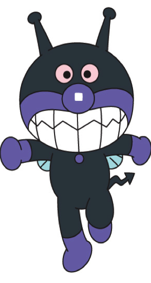

Baikinman
Baikinman (バイキンマン) is the main antagonist of the Anpanman books and anime series. He came to earth from Baikin Planet in an egg as a baby the same day Anpanman was born, always stops him and his evil plans, saving the day when he's causing trouble.
Description
Baikinman's an anthropomorphic Demonic germ who looks like a fly with large teeth, pink eyes, purple lips, two antennas, fly-like wings, a purple nose, a zigzag-shaped tail, a black furry body, and a slimy blue tongue. Baikinman, himself as a germ entity, wants to spread germs and bacteria to Anpanman and his friends. He's weak to soap, which it makes him shrink. He establishes his crimes through riding a personal UFO that sometimes extends its grip to capture innocent people. He also keeps a collection of vehicles/tools that harms his enemies. Baikinman usually gets defeated by Anpanman or an ally in the anime.
Allies
Baikinman's primary ally's Dokinchan. He also has other germ allies such as Horrorman and the Kabirunrun, who make the characters with bread heads moldy.
Enemies
Rollpanna: He has tried to turn Rollpanna evil by adding Baikin Grass which causes Rollpanna to turn evil upon seeing Anpanman. Unfortunately for Baikinman, Rollpanna is aware of this and avoids seeing Anpanman so that she doesn't become an unintentional ally of his